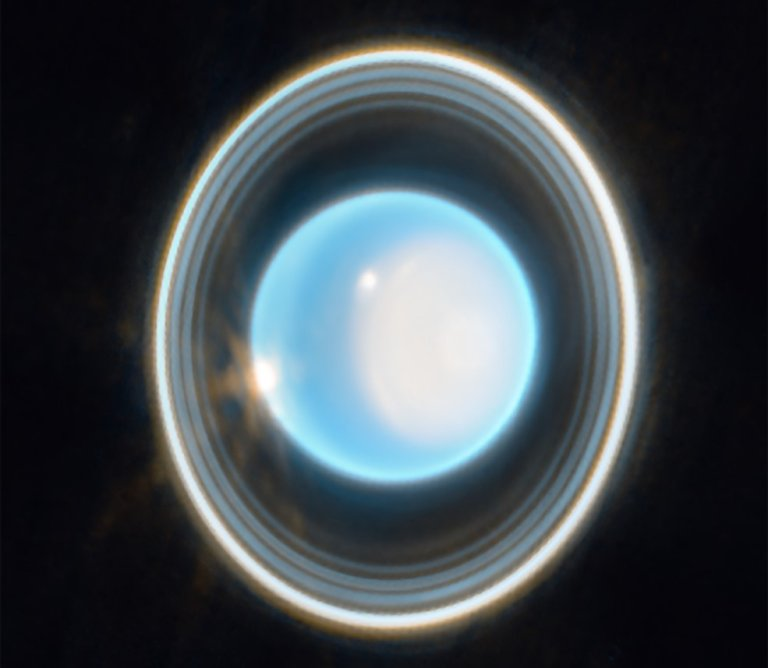

Urano é o sétimo planeta a partir do Sol e um gigante gelado com uma rotação incomum.

Seus anéis e sua atmosfera podem ser observados em imagens do Telescópio Espacial James Webb.

Descoberto com telescópio em 1781, Urano tem atmosfera de hidrogênio, hélio e metano. Seu eixo é inclinado cerca de 98 graus, fazendo o planeta girar quase de lado e produzindo estações extremas. Ele possui anéis, luas e ventos intensos.